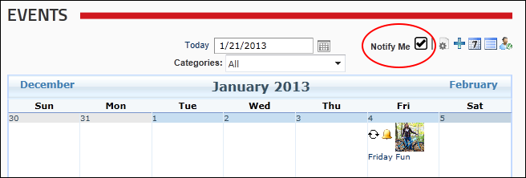

- Check
 the check box to subscribe to notifications.
the check box to subscribe to notifications. - Uncheck
 the check box to unsubscribe from notifications.
the check box to unsubscribe from notifications.
How to subscribe to receive notifications when a new event is added to the Events module. Note: This option may not be available.
Prerequisite. The Event Notification schedule must be enabled for event/enrollment notifications to be sent.

Notification of new events enabled
Related Topics: